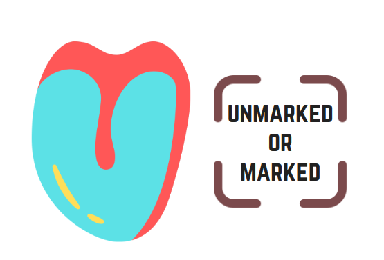

Input Image
Image Heatmap

Classification
Confidence
Does the image contains parts other than tongue?
Legend
It utilizes the “jet” colormap as indicated below,
where the blue indicates the least factor that affects
the prediction of the model while red highlights what
contributed the most.